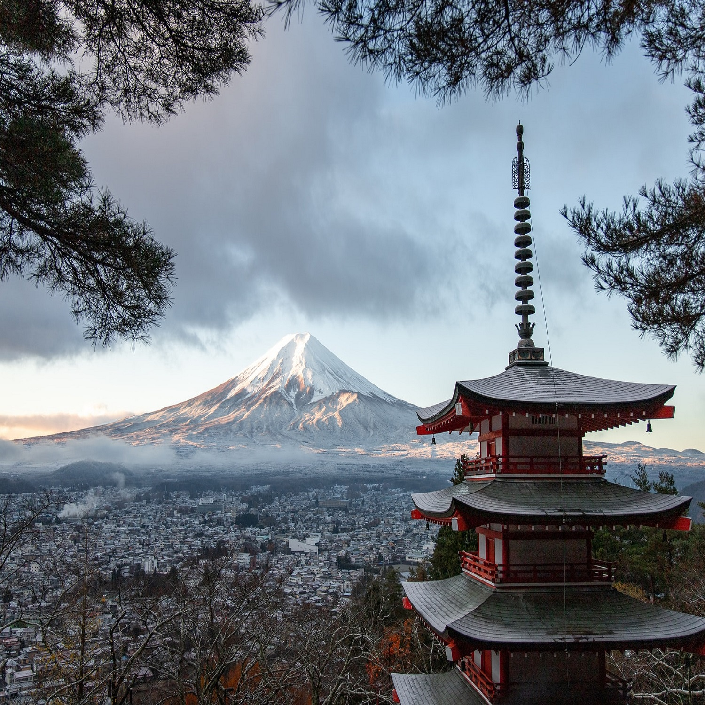
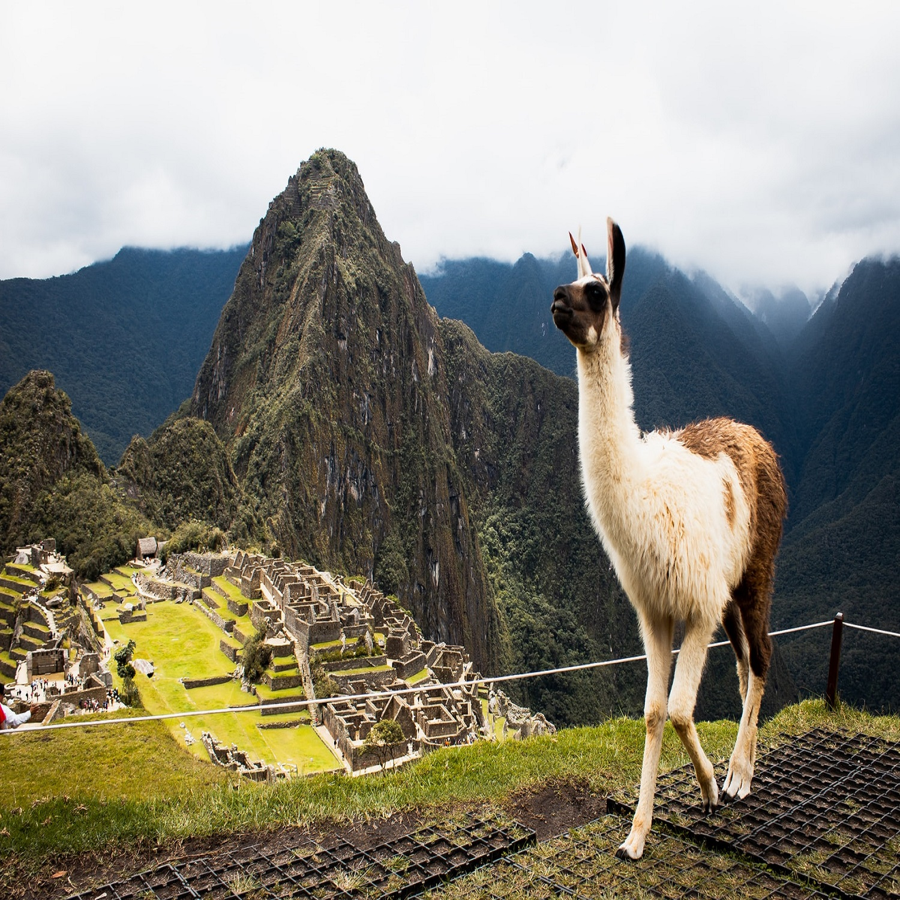
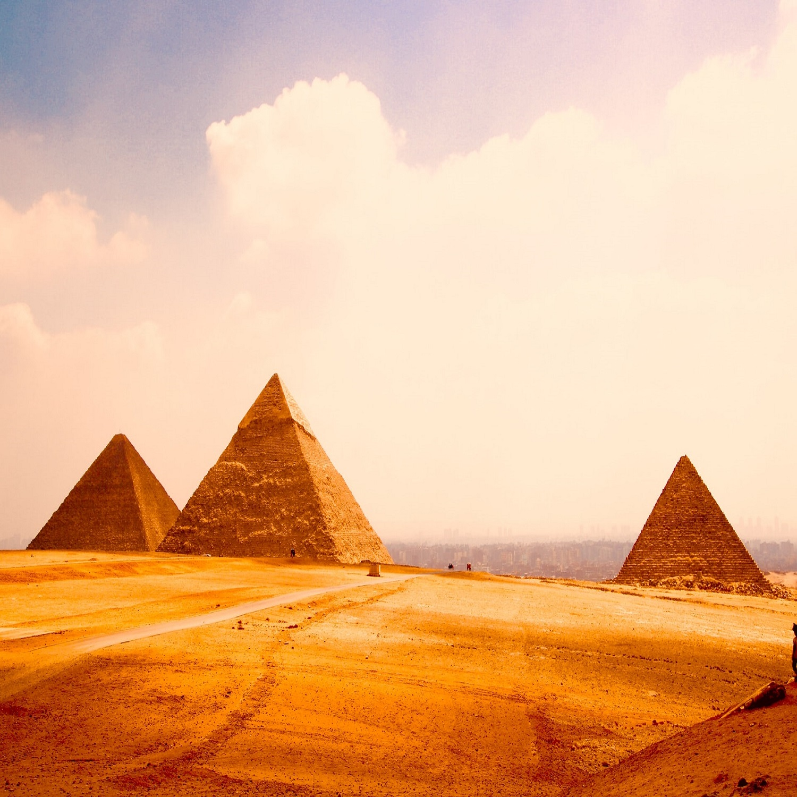

5st abr, 2022
Vacations in japan (Mount Fuji)
Mount Fuji is the highest mountain on the island of Honshu and the entire Japanese archipelago. It is an active volcano, but with a low risk of eruption. Mount Fuji is located west of Tokyo near the Pacific coast of the island of Honshu, on the border between Shizuoka and Yamanashi prefectures.
Mount Fuji has been considered sacred by the Japanese since ancient times by Buddhists, who believe that the mountain is the gateway to a new world, along with Mount Tate and Mount Haku, which form the “Three Holy Mountains” of Japan.

5st abr, 2022
Honeymoon in Peru (Machu Picchu)
Huayna Picchu Picchu or Machu Picchu (in Quechua Machu Picchu, "old mountain"), also called "lost city of the Incas", is a well-preserved pre-Columbian city, located on top of a mountain, at an altitude of 2,400 meters, in the valley of the Urubamba River, present-day Peru.
Machu Picchu was built in the mid-15th century at the request of the ninth Inca Emperor Pachacutéc. Its construction, for the most part, was made with stones. As the Inca people had a great religiosity, it is believed that it was built in such a high place to be close to the gods.

5st abr, 2022
Celebrating 10 years of marriage
The Egyptian pyramids are structures built more than 4,500 years ago where the pharaohs, the kings of Ancient Egypt, were buried. Made of huge blocks of stone, which weighed, on average, more than 2 tons, they housed in their interior burial chambers, narrow and steep corridors, galleries and false passages.
Egyptian pyramids are ancient masonry structures built by the civilization of Ancient Egypt. As of November 2008, there were sources citing between 118 and 138 identified Egyptian pyramids.